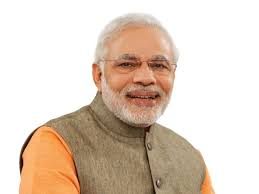

Narendra Modi, born on September 17, 1950, is a prominent Indian politician and a member of the Bharatiya Janata Party (BJP). He has been serving as the Prime Minister of India since May 2014, following the BJP's victory in the general elections.
Modi has had a long political career, initially serving as the Chief Minister of the Indian state of Gujarat from 2001 to 2014. His tenure as Chief Minister was marked by economic development initiatives, but it was also marred by controversy related to the handling of the 2002 Gujarat riots. As Prime Minister, Modi has focused on various policy initiatives, including the "Make in India" campaign to boost manufacturing, Swachh Bharat Abhiyan (Clean India campaign) for sanitation, demonetization in 2016 to tackle corruption and black money, and the implementation of the Goods and Services Tax (GST) to streamline the tax system.
Narendra Modi was born on September 17, 1950, in Vadnagar, a town in Gujarat, India. He comes from a humble background and worked at his family's tea stall during his early years. Modi joined the Rashtriya Swayamsevak Sangh (RSS), a Hindu nationalist organization, in his youth, which laid the foundation for his political career.
Modi's political career gained prominence during his tenure as the Chief Minister of Gujarat from 2001 to 2014. He focused on economic development, infrastructure, and attracting investments to the state. However, his administration faced criticism for its handling of the 2002 Gujarat riots, which resulted in communal violence and raised concerns about human rights.
about NARENDRA MODI